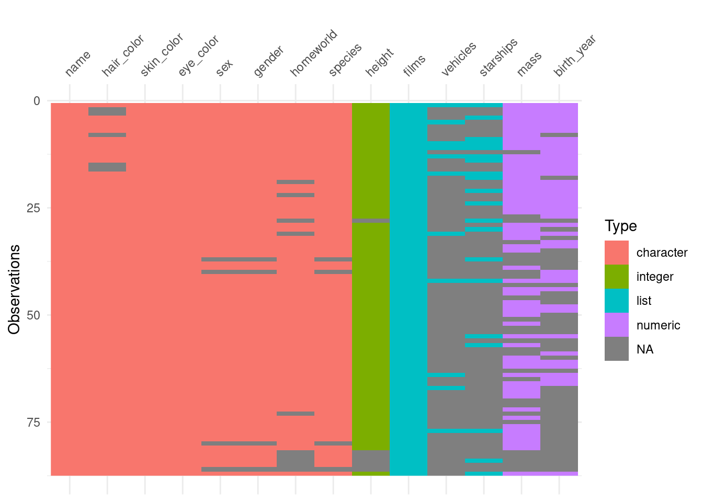

Universidade Federal da Paraíba
Centro de Ciências Exatas e da Natureza
Departamento de Estatística
Tópicos em Modelagem Matemática e Computacional / Programação em linguagem R
(Primeira Avaliação)
Professor
Prof. Dr. Pedro Rafael D. Marinho
Data da Avaliação
26 de setembro de 2022
Instruções
Prezado discente, ao final da avaliação, você deverá enviar o script R para o o email pedro.rafael.marinho@gmail.com. No título do email deverá constar o seu nome e sua matrícula. No script, as respostas devem estar identificando bem as questões. Todos os comentários deverão ser feitos utilizando comentários válidos em R, i.e., deverão utilizar #.
Algumas observações importantes
As soluções que fiz usam unica e exclusivamente conceitos de estruturas de dados de R e funções que encontram-se nos slides. Por motivos óbvios, isso em nada impede que você escolha em utilizar outros conceitos que foram ministrados em sala de aula.
Além disso, as soluções que fiz não são as melhores soluções. Existe formas mais elegantes de resolver os problemas. Porém, a ideia aqui é utilizar os conceitos congruentes aos assuntos da primeira avaliação.
O operador |> (operador de pipe) que utilizo nas soluções não são condições necessárias para resolver as questões de prova. Onde tiver obj |> funcao() você poderá substituir por funcao(obj);
A biblioteca dplyr que é carregada, por exemplo, na questão 5, onde sugiro que seja feito library(dplyr) não era objeto de estudo, i.e., você para resolver as questões não precisava conhecer NADA da dplyr. O uso dela, aqui, se deve unica e exclusivamente para carregar o conjunto de dados starwars;
Sugiro fortemente que estudem as soluções.
Questão 1:
Para acessar variáveis em um data.frame ou tibble, podemos utilizar os operadores $ ou [[. Os operadores são totalmente redundantes? Existe alguma situação em que o uso do operador [[ poderá ser preferível ao uso do operador $. Explique, e em caso afirmativo, dê um exempo.
Veja a resposta clicando aqui!
# Na maioria dos casos, o operador $ e [[ poderão produzir os mesmos resultados. # Todavia, em situações em que o nome de uma variável venha pertencer a um objeto# onde desejamos utilizar para acessar uma variável, o operador [[ será mais útil.# Note que "mpg" é uma string que passamos para o objeto de nome var. # Por exemplo, esse é o nome de uma das variáveis do data.frame mtcars.var <-"mpg"# Note que usando o operador $ não poderei acessar mpg por meio de var:mtcars$var# Note porém que usando o operador [[ esse acesso, por intermédio de um objeto# intermediário será possível:mtcars[[var]]
Questão 2:
Considere o conjunto de dados AirPassengers, conforme criado abaixo. Utilizando um funcional coveniente, obtenha um vetor atômico com a proporção de voos por meses dos respectivos anos. Obtenha um outro vetor atômico com a quantidade média de voos dos respectivos meses. Informações sobre o conjunto de dados podem ser obtidas executando o comando help(AirPassengers). Você não precisa se dar o trabalho de entender o código abaixo. Apenas utilize a tibbleAirPassengers gerada pelo código abaixo para responder a questão. Não utilize saltos de fé!
# Apenas utilizando o apply é possível obter a proporção de voos por meses, # nos respectivos anos.prop_meses_por_anos <- AirPassengers[-1L] |>apply(MARGIN = 1L, FUN = \(x) x/sum(x))colnames(prop_meses_por_anos) <- AirPassengers$Yearprop_meses_por_anos# Se quiser o vetor atômico contendo a proporção de voos por meses dos# respectivos anos, então:prop_meses_por_anos |>as.numeric()# Mais fácil ainda para obter um vetor atômico com a quantidade média de voos# por meses.media_voos_meses <- AirPassengers[-1L] |>apply(MARGIN = 2L, FUN = mean)media_voos_meses
Questão 3:
Com base nos dados state.x77, obtenha uma tibble com os estados norte americanos com renda (Income) acima da média e expectativa de vida (Life Exp) acima do terceiro quartil. Note que os nomes dos estados estão nomeando as linhas do data.framestate.x77. No entanto, os nomes deverão ser uma variável (a primeira coluna) na tibble a ser construída. Dica: utilize a função quantile() para obter o quartil desejado. Não utilize saltos de fé!
Veja a resposta clicando aqui!
# Obtendo os nomes dos estados para poder introduizr como variável do # data.frame que irei reconstruir.State <-rownames(state.x77)# Perceba que state.x77 é uma matriz. Faça class(state.x77) e perceba.# Para converter em tibble ou data.frame basta fazer as_tbl ou as.data.frame,# respectivamente. No caso da tibble, teria que carregar a biblioteca tibble# fazendo library(tibble) no início da solução do exercício.state.x77 <-as.data.frame(state.x77)# Colocando o nome dos estados norte americanos como primeira variábel do # data.frame.state.x77 <-cbind(State, state.x77)# Removendo os nomes das linhasrownames(state.x77) <-NULL# Valor da renda médiarenda_media <-mean(state.x77$Income)# Terceiro quartilterceiro_quartil <-quantile(state.x77$`Life Exp`)[4L]# Obtendo um vetor lógico com as posições (linhas do data.frame) cuja as rendas # estão acima da média.id_media <- state.x77$Income > renda_media# Obtendo um vetor lógico com as posições (linhas do data.frame) cuja as # expectativas de vidas estão acima da média.id_expec <- state.x77$`Life Exp`> terceiro_quartil# Estados norte americanos com renda e expectativa de vida acima da médiastate.x77[id_media & id_expec,]
Questão 4:
Considere o conjunto de dados iris. Você poderá consultar detalhes sobre o conjunto de dados em sua documentação, fazendo help(iris). Utilizando uma implementação coerente que trate a informação em iris, obtenha a seguinte tibble. Não utilize saltos de fé!
# Obtendo species (primeira coluna do data.frame que será montado no final)especies <-levels(iris$Species)# Vamos dividir para consquistar. Abaixo estou criando os data.frames para cada# variável categória.iris_setosa <- iris[iris$Species == especies[1L],]iris_versicolor <- iris[iris$Species == especies[2L],]iris_virginica <- iris[iris$Species == especies[3L],]# Obtendo as variáveis necessárias para montar a tibble ou o data.frame finaln_setosa <-nrow(iris_setosa)n_versicolor <-nrow(iris_versicolor)n_virginica <-nrow(iris_virginica)# Segunda coluna do data.frame (que será montado no final)n_especies <-c(n_setosa, n_versicolor, n_virginica)# Terceira coluna do data.frame (que será montado no final)media_largura_petala <-c(mean(iris_setosa$Petal.Width),mean(iris_versicolor$Petal.Width),mean(iris_virginica$Petal.Width) )# Quarta coluna do data.frame (que será montado no final)mediana_largura_petala <-c(median(iris_setosa$Petal.Width),median(iris_versicolor$Petal.Width),median(iris_virginica$Petal.Width) )data.frame( especies, n_especies, media_largura_petala, mediana_largura_petala)
Questão 5:
Considere o conjunto de dados starwars. Esse conjunto de dados, disponível no pacote dplyr (carregue-o fazendo library(dplyr)), possui algumas variáveis com informações faltantes. Dica: a imagem ao lado ajudará identificar as colunas com informações faltantes. Os retângulos em cinza indicam informações faltantes. Por exemplo, pelo gráfico é possível notar que a segunda variável do banco de dados é uma das variáveis que possuem informações faltantes.

Figura 1: Os retâgulos cinzas são informações faltantes.
Responda:
Construa a tibble de nome tbl_sem_na com o conjunto de dados sem informações faltantes, em nenhuma das variáveis;
Veja a resposta clicando aqui!
# Precisamos do pacote dplyr para acessar o conjunto de dados starwars.library(dplyr)tbl_sem_na <- starwars[!is.na(starwars$hair_color) &!is.na(starwars$mass) &!is.na(starwars$sex) &!is.na(starwars$height) &!is.na(starwars$gender) &!is.na(starwars$homeworld) &!is.na(starwars$birth_year),]
Construa a tibble de nome tbl_media com a média das variáveis numéricas de starwars.
name height mass hair_color skin_color eye_color birth_year
0 6 28 5 0 0 44
sex gender homeworld species films vehicles starships
4 4 10 4 0 0 0
Veja a resposta clicando aqui!
# Temos aqui o uso de um funcional; o funcional sapply. Esse funcional está # recebendo um vetor da classe character passado como argumento para X.# Esse vetor corresponde aos nomes das colunas do data.frame de nome starwars.# Todo funcional espera uma função como argumento. Sendo assim, note que# is.na(starwars[[x]]), para cada valor de x, irá assumir o nome# de uma coluna do data.frame starwars, ou seja, será uma coluna de starwars.# Portanto, sum(is.na(starwars[[x]])) retornará o número de NA's de uma dada# coluna x.# O funcional sapply, que está iterando sobre os nomes das colunas de starwars,# i.e., x assumirá, em cada iteração do funcional, um nome de uma coluna de starwars.# Assim, o funcional irá retornar um vetor atômico com a quantidade de NA's, nas # respectivas colunas iteradas pelo funcional.